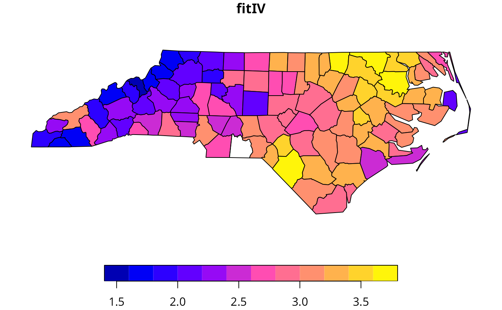

spautolm.RdFunction taking family and weights arguments for spatial autoregression model estimation by Maximum Likelihood, using dense matrix methods, not suited to large data sets with thousands of observations. With one of the sparse matrix methods, larger numbers of observations can be handled, but the interval= argument should be set. The implementation is GLS using the single spatial coefficient value, here termed lambda, found by line search using optimize to maximise the log likelihood.
spautolm(formula, data = list(), listw, weights, na.action, family = "SAR", method="eigen", verbose = NULL, trs=NULL, interval=NULL, zero.policy = NULL, tol.solve=.Machine$double.eps, llprof=NULL, control=list()) # S3 method for spautolm summary(object, correlation = FALSE, adj.se=FALSE, Nagelkerke=FALSE, ...)
| formula | a symbolic description of the model to be fit. The details
of model specification are given for |
|---|---|
| data | an optional data frame containing the variables in the model. By default the variables are taken from the environment which the function is called. |
| listw | a |
| weights | an optional vector of weights to be used in the fitting process |
| na.action | a function (default |
| family | character string: either |
| method | character string: default |
| verbose | default NULL, use global option value; if TRUE, reports function values during optimization. |
| trs | default NULL, if given, a vector of powered spatial weights matrix traces output by |
| interval | search interval for autoregressive parameter when not using method="eigen"; default is c(-1,0.999), |
| zero.policy | default NULL, use global option value; Include list of no-neighbour observations in output if TRUE --- otherwise zero.policy is handled within the listw argument |
| tol.solve | the tolerance for detecting linear dependencies in the columns of matrices to be inverted - passed to |
| llprof | default NULL, can either be an integer, to divide the feasible range into llprof points, or a sequence of spatial coefficient values, at which to evaluate the likelihood function |
| control | list of extra control arguments - see section below |
| object |
|
| correlation | logical; if 'TRUE', the correlation matrix of the estimated parameters is returned and printed (default=FALSE) |
| adj.se | if TRUE, adjust the coefficient standard errors for the number of fitted coefficients |
| Nagelkerke | if TRUE, the Nagelkerke pseudo R-squared is reported |
| ... | further arguments passed to or from other methods |
This implementation is based on lm.gls and errorsarlm. In particular, the function does not (yet) prevent asymmetric spatial weights being used with "CAR" family models. It appears that both numerical issues (convergence in particular) and uncertainties about the exact spatial weights matrix used make it difficult to reproduce Cressie and Chan's 1989 results, also given in Cressie 1993.
Note that the fitted() function for the output object assumes that the response variable may be reconstructed as the sum of the trend, the signal, and the noise (residuals). Since the values of the response variable are known, their spatial lags are used to calculate signal components (Cressie 1993, p. 564). This differs from other software, including GeoDa, which does not use knowledge of the response variable in making predictions for the fitting data.
the desired accuracy of the optimization - passed to optimize() (default=.Machine$double.eps^(2/3))
default NULL, then set to (method != "eigen") internally; use fdHess to compute an approximate Hessian using finite differences when using sparse matrix methods; used to make a coefficient covariance matrix when the number of observations is large; may be turned off to save resources if need be
default FALSE, use fdHess from nlme, if TRUE, use optim to calculate Hessian at optimum
default “optimHess”, may be “nlm” or one of the optim methods
default 2; used for preparing the Cholesky decompositions for updating in the Jacobian function
if NULL (default), set to FALSE to use a simplicial decomposition for the sparse Cholesky decomposition and method “Matrix_J”, set to as.logical(NA) for method “Matrix”, if TRUE, use a supernodal decomposition
default 5; highest power of the approximating polynomial for the Chebyshev approximation
default 16; number of random variates
default 30; number of products of random variates matrix and spatial weights matrix
default “MC”, used with method “moments”; alternatives “mult” and “moments”, for use if trs is missing, trW
default TRUE, used with method “moments” to compute the Smirnov/Anselin correction term
default TRUE, used with method “moments” to truncate the Smirnov/Anselin correction term
default “LU”, may be “MC”
default 200, as in SE toolbox; the size of the first stage lndet grid; it may be reduced to for example 40
default 2000, as in SE toolbox; the size of the second stage lndet grid
default TRUE; if the method is not “eigen”, use asymmetric covariances rather than numerical Hessian ones if n <= small
default 1500; threshold number of observations for asymmetric covariances when the method is not “eigen”
default NULL, may be used to pass a pre-computed SE toolbox style matrix of coefficients and their lndet values to the "SE_classic" and "SE_whichMin" methods
default FALSE; used in “LU_prepermutate”, note warnings given for lu method
default NULL; may be used to pass a pre-computed vector of eigenvalues
A list object of class spautolm:
a list, with items:
ML coefficient estimates ML sum of squared errors ML residual variance ML coefficient covariance matrix (before multiplying by s2) non-spatial component of fitted.values spatial component of fitted.values sum of non-spatial and spatial components of fitted.values difference between observed and fitted values
ML autoregressive coefficient
log likelihood for fitted model
log likelihood for model with lambda=0
the call used to create this object
number of parameters estimated
if not NULL, details of aliased variables
Jacobian method chosen
family chosen
zero.policy used
case weights used
the line search interval used
processing timings
(possibly) named vector of excluded or omitted observations if non-default na.action argument used
if not NULL, a list with components lambda and ll of equal length
Numerical Hessian-based standard error of lambda
Numerical Hessian-based variance-covariance matrix
covariates used in model fitting
response used in model fitting
weights used in model fitting
Cliff, A. D., Ord, J. K. 1981 Spatial processes, Pion; Ord, J. K. 1975 Estimation methods for models of spatial interaction, Journal of the American Statistical Association, 70, 120-126; Waller, L. A., Gotway, C. A. 2004 Applied spatial statistics for public health, Wiley, Hoboken, NJ, 325-380; Cressie, N. A. C. 1993 Statistics for spatial data, Wiley, New York, 548-568; Ripley, B. D. 1981 Spatial statistics, Wiley, New York, 88-95; LeSage J and RK Pace (2009) Introduction to Spatial Econometrics. CRC Press, Boca Raton.
The standard errors given in Waller and Gotway (2004) are adjusted for the numbers of parameters estimated, and may be reproduced by using the additional argument adj.se=TRUE in the summary method. In addition, the function returns fitted values and residuals as given by Cressie (1993) p. 564.
require("sf", quietly=TRUE) nydata <- st_read(system.file("shapes/NY8_bna_utm18.gpkg", package="spData")[1], quiet=TRUE) if (FALSE) { lm0 <- lm(Z ~ PEXPOSURE + PCTAGE65P + PCTOWNHOME, data=nydata) summary(lm0) lm0w <- lm(Z ~ PEXPOSURE + PCTAGE65P + PCTOWNHOME, data=nydata, weights=POP8) summary(lm0w) } suppressMessages(nyadjmat <- as.matrix(foreign::read.dbf(system.file( "misc/nyadjwts.dbf", package="spData")[1])[-1])) suppressMessages(ID <- as.character(names(foreign::read.dbf(system.file( "misc/nyadjwts.dbf", package="spData")[1]))[-1])) identical(substring(ID, 2, 10), substring(as.character(nydata$AREAKEY), 2, 10))#> [1] TRUE#require("spdep", quietly=TRUE) nyadjlw <- spdep::mat2listw(nyadjmat, as.character(nydata$AREAKEY)) listw_NY <- spdep::nb2listw(nyadjlw$neighbours, style="B") eigs <- eigenw(listw_NY) if (FALSE) { esar0 <- errorsarlm(Z ~ PEXPOSURE + PCTAGE65P + PCTOWNHOME, data=nydata, listw=listw_NY) summary(esar0) } system.time(esar1f <- spautolm(Z ~ PEXPOSURE + PCTAGE65P + PCTOWNHOME, data=nydata, listw=listw_NY, family="SAR", method="eigen", control=list(pre_eig=eigs)))#> user system elapsed #> 0.251 0.000 0.258#> #> Call: #> spautolm(formula = Z ~ PEXPOSURE + PCTAGE65P + PCTOWNHOME, data = nydata, #> listw = listw_NY, family = "SAR", method = "eigen", control = list(pre_eig = eigs)) #> #> Residuals: #> Min 1Q Median 3Q Max #> -1.56754 -0.38239 -0.02643 0.33109 4.01219 #> #> Coefficients: #> Estimate Std. Error z value Pr(>|z|) #> (Intercept) -0.618193 0.176784 -3.4969 0.0004707 #> PEXPOSURE 0.071014 0.042051 1.6888 0.0912635 #> PCTAGE65P 3.754200 0.624722 6.0094 1.862e-09 #> PCTOWNHOME -0.419890 0.191329 -2.1946 0.0281930 #> #> Lambda: 0.040487 LR test value: 5.2438 p-value: 0.022026 #> Numerical Hessian standard error of lambda: 0.017209 #> #> Log likelihood: -276.1069 #> ML residual variance (sigma squared): 0.41388, (sigma: 0.64333) #> Number of observations: 281 #> Number of parameters estimated: 6 #> AIC: 564.21 #>if (FALSE) { sqrt(diag(res$resvar)) sqrt(diag(esar1f$fit$imat)*esar1f$fit$s2) sqrt(diag(esar1f$fdHess)) system.time(esar1M <- spautolm(Z ~ PEXPOSURE + PCTAGE65P + PCTOWNHOME, data=nydata, listw=listw_NY, family="SAR", method="Matrix")) summary(esar1M) system.time(esar1M <- spautolm(Z ~ PEXPOSURE + PCTAGE65P + PCTOWNHOME, data=nydata, listw=listw_NY, family="SAR", method="Matrix", control=list(super=TRUE))) summary(esar1M) } esar1wf <- spautolm(Z ~ PEXPOSURE + PCTAGE65P + PCTOWNHOME, data=nydata, listw=listw_NY, weights=POP8, family="SAR", method="eigen", control=list(pre_eig=eigs)) summary(esar1wf)#> #> Call: #> spautolm(formula = Z ~ PEXPOSURE + PCTAGE65P + PCTOWNHOME, data = nydata, #> listw = listw_NY, weights = POP8, family = "SAR", method = "eigen", #> control = list(pre_eig = eigs)) #> #> Residuals: #> Min 1Q Median 3Q Max #> -1.48488 -0.26823 0.09489 0.46552 4.28343 #> #> Coefficients: #> Estimate Std. Error z value Pr(>|z|) #> (Intercept) -0.797063 0.144054 -5.5331 3.146e-08 #> PEXPOSURE 0.080545 0.028334 2.8428 0.004473 #> PCTAGE65P 3.816731 0.576037 6.6258 3.453e-11 #> PCTOWNHOME -0.380778 0.156507 -2.4330 0.014975 #> #> Lambda: 0.0095636 LR test value: 0.32665 p-value: 0.56764 #> Numerical Hessian standard error of lambda: 0.016466 #> #> Log likelihood: -251.6017 #> ML residual variance (sigma squared): 1104.1, (sigma: 33.229) #> Number of observations: 281 #> Number of parameters estimated: 6 #> AIC: 515.2 #>if (FALSE) { system.time(esar1wM <- spautolm(Z ~ PEXPOSURE + PCTAGE65P + PCTOWNHOME, data=nydata, listw=listw_NY, weights=POP8, family="SAR", method="Matrix")) summary(esar1wM) esar1wlu <- spautolm(Z ~ PEXPOSURE + PCTAGE65P + PCTOWNHOME, data=nydata, listw=listw_NY, weights=POP8, family="SAR", method="LU") summary(esar1wlu) esar1wch <- spautolm(Z ~ PEXPOSURE + PCTAGE65P + PCTOWNHOME, data=nydata, listw=listw_NY, weights=POP8, family="SAR", method="Chebyshev") summary(esar1wch) } ecar1f <- spautolm(Z ~ PEXPOSURE + PCTAGE65P + PCTOWNHOME, data=nydata, listw=listw_NY, family="CAR", method="eigen", control=list(pre_eig=eigs)) summary(ecar1f)#> #> Call: #> spautolm(formula = Z ~ PEXPOSURE + PCTAGE65P + PCTOWNHOME, data = nydata, #> listw = listw_NY, family = "CAR", method = "eigen", control = list(pre_eig = eigs)) #> #> Residuals: #> Min 1Q Median 3Q Max #> -1.539732 -0.384311 -0.030646 0.335126 3.808848 #> #> Coefficients: #> Estimate Std. Error z value Pr(>|z|) #> (Intercept) -0.648362 0.181129 -3.5796 0.0003442 #> PEXPOSURE 0.077899 0.043692 1.7829 0.0745986 #> PCTAGE65P 3.703830 0.627185 5.9055 3.516e-09 #> PCTOWNHOME -0.382789 0.195564 -1.9574 0.0503053 #> #> Lambda: 0.084123 LR test value: 5.8009 p-value: 0.016018 #> Numerical Hessian standard error of lambda: 0.030868 #> #> Log likelihood: -275.8283 #> ML residual variance (sigma squared): 0.40758, (sigma: 0.63842) #> Number of observations: 281 #> Number of parameters estimated: 6 #> AIC: 563.66 #>if (FALSE) { system.time(ecar1M <- spautolm(Z ~ PEXPOSURE + PCTAGE65P + PCTOWNHOME, data=nydata, listw=listw_NY, family="CAR", method="Matrix")) summary(ecar1M) } ecar1wf <- spautolm(Z ~ PEXPOSURE + PCTAGE65P + PCTOWNHOME, data=nydata, listw=listw_NY, weights=POP8, family="CAR", method="eigen", control=list(pre_eig=eigs)) summary(ecar1wf)#> #> Call: #> spautolm(formula = Z ~ PEXPOSURE + PCTAGE65P + PCTOWNHOME, data = nydata, #> listw = listw_NY, weights = POP8, family = "CAR", method = "eigen", #> control = list(pre_eig = eigs)) #> #> Residuals: #> Min 1Q Median 3Q Max #> -1.491042 -0.270906 0.081435 0.451556 4.198134 #> #> Coefficients: #> Estimate Std. Error z value Pr(>|z|) #> (Intercept) -0.790154 0.144862 -5.4545 4.910e-08 #> PEXPOSURE 0.081922 0.028593 2.8651 0.004169 #> PCTAGE65P 3.825858 0.577720 6.6223 3.536e-11 #> PCTOWNHOME -0.386820 0.157436 -2.4570 0.014010 #> #> Lambda: 0.022419 LR test value: 0.38785 p-value: 0.53343 #> Numerical Hessian standard error of lambda: 0.038543 #> #> Log likelihood: -251.5711 #> ML residual variance (sigma squared): 1102.9, (sigma: 33.21) #> Number of observations: 281 #> Number of parameters estimated: 6 #> AIC: 515.14 #>if (FALSE) { system.time(ecar1wM <- spautolm(Z ~ PEXPOSURE + PCTAGE65P + PCTOWNHOME, data=nydata, listw=listw_NY, weights=POP8, family="CAR", method="Matrix")) summary(ecar1wM) } require("sf", quietly=TRUE) nc.sids <- st_read(system.file("shapes/sids.shp", package="spData")[1], quiet=TRUE) ft.SID74 <- sqrt(1000)*(sqrt(nc.sids$SID74/nc.sids$BIR74) + sqrt((nc.sids$SID74+1)/nc.sids$BIR74)) lm_nc <- lm(ft.SID74 ~ 1) sids.nhbr30 <- spdep::dnearneigh(cbind(nc.sids$east, nc.sids$north), 0, 30, row.names=row.names(nc.sids)) sids.nhbr30.dist <- spdep::nbdists(sids.nhbr30, cbind(nc.sids$east, nc.sids$north)) sids.nhbr <- spdep::listw2sn(spdep::nb2listw(sids.nhbr30, glist=sids.nhbr30.dist, style="B", zero.policy=TRUE))#> Warning: zero sum general weightsdij <- sids.nhbr[,3] n <- nc.sids$BIR74 el1 <- min(dij)/dij el2 <- sqrt(n[sids.nhbr$to]/n[sids.nhbr$from]) sids.nhbr$weights <- el1*el2 sids.nhbr.listw <- spdep::sn2listw(sids.nhbr)#> Warning: 56, 87 are not originsboth <- factor(paste(nc.sids$L_id, nc.sids$M_id, sep=":")) ft.NWBIR74 <- sqrt(1000)*(sqrt(nc.sids$NWBIR74/nc.sids$BIR74) + sqrt((nc.sids$NWBIR74+1)/nc.sids$BIR74)) mdata <- data.frame(both, ft.NWBIR74, ft.SID74, BIR74=nc.sids$BIR74) outl <- which.max(rstandard(lm_nc)) as.character(nc.sids$NAME[outl])#> [1] "Anson"mdata.4 <- mdata[-outl,] W <- spdep::listw2mat(sids.nhbr.listw) W.4 <- W[-outl, -outl] sids.nhbr.listw.4 <- spdep::mat2listw(W.4) esarI <- errorsarlm(ft.SID74 ~ 1, data=mdata, listw=sids.nhbr.listw, zero.policy=TRUE) summary(esarI)#> #> Call:errorsarlm(formula = ft.SID74 ~ 1, data = mdata, listw = sids.nhbr.listw, #> zero.policy = TRUE) #> #> Residuals: #> Min 1Q Median 3Q Max #> -1.887117 -0.636573 -0.043429 0.448767 3.406724 #> #> Type: error #> Regions with no neighbours included: #> 56 87 #> Coefficients: (asymptotic standard errors) #> Estimate Std. Error z value Pr(>|z|) #> (Intercept) 2.97463 0.13011 22.862 < 2.2e-16 #> #> Lambda: 0.66864, LR test value: 10.214, p-value: 0.0013939 #> Asymptotic standard error: 0.11473 #> z-value: 5.8278, p-value: 5.6146e-09 #> Wald statistic: 33.964, p-value: 5.6146e-09 #> #> Log likelihood: -133.8616 for error model #> ML residual variance (sigma squared): 0.81932, (sigma: 0.90516) #> Number of observations: 100 #> Number of parameters estimated: 3 #> AIC: 273.72, (AIC for lm: 281.94) #>#> #> Call: spautolm(formula = ft.SID74 ~ 1, data = mdata, listw = sids.nhbr.listw, #> family = "SAR") #> #> Residuals: #> Min 1Q Median 3Q Max #> -1.887117 -0.636573 -0.043429 0.448767 3.406724 #> #> Coefficients: #> Estimate Std. Error z value Pr(>|z|) #> (Intercept) 2.97463 0.13011 22.862 < 2.2e-16 #> #> Lambda: 0.66864 LR test value: 10.214 p-value: 0.0013939 #> Numerical Hessian standard error of lambda: 0.16506 #> #> Log likelihood: -133.8616 #> ML residual variance (sigma squared): 0.81932, (sigma: 0.90516) #> Number of observations: 100 #> Number of parameters estimated: 3 #> AIC: 273.72 #>esarIV <- errorsarlm(ft.SID74 ~ ft.NWBIR74, data=mdata, listw=sids.nhbr.listw, zero.policy=TRUE) summary(esarIV)#> #> Call: #> errorsarlm(formula = ft.SID74 ~ ft.NWBIR74, data = mdata, listw = sids.nhbr.listw, #> zero.policy = TRUE) #> #> Residuals: #> Min 1Q Median 3Q Max #> -2.123648 -0.573163 0.017859 0.468022 2.693604 #> #> Type: error #> Regions with no neighbours included: #> 56 87 #> Coefficients: (asymptotic standard errors) #> Estimate Std. Error z value Pr(>|z|) #> (Intercept) 1.549443 0.219230 7.0677 1.576e-12 #> ft.NWBIR74 0.041974 0.006171 6.8018 1.033e-11 #> #> Lambda: 0.18465, LR test value: 0.50496, p-value: 0.47733 #> Asymptotic standard error: 0.20648 #> z-value: 0.89424, p-value: 0.37119 #> Wald statistic: 0.79967, p-value: 0.37119 #> #> Log likelihood: -117.7464 for error model #> ML residual variance (sigma squared): 0.61546, (sigma: 0.78451) #> Number of observations: 100 #> Number of parameters estimated: 4 #> AIC: 243.49, (AIC for lm: 242) #>esarIVa <- spautolm(ft.SID74 ~ ft.NWBIR74, data=mdata, listw=sids.nhbr.listw, family="SAR") summary(esarIVa)#> #> Call: #> spautolm(formula = ft.SID74 ~ ft.NWBIR74, data = mdata, listw = sids.nhbr.listw, #> family = "SAR") #> #> Residuals: #> Min 1Q Median 3Q Max #> -2.123648 -0.573163 0.017859 0.468022 2.693604 #> #> Coefficients: #> Estimate Std. Error z value Pr(>|z|) #> (Intercept) 1.549443 0.219230 7.0677 1.576e-12 #> ft.NWBIR74 0.041974 0.006171 6.8018 1.033e-11 #> #> Lambda: 0.18465 LR test value: 0.50496 p-value: 0.47733 #> Numerical Hessian standard error of lambda: 0.25591 #> #> Log likelihood: -117.7464 #> ML residual variance (sigma squared): 0.61546, (sigma: 0.78451) #> Number of observations: 100 #> Number of parameters estimated: 4 #> AIC: 243.49 #>esarIaw <- spautolm(ft.SID74 ~ 1, data=mdata, listw=sids.nhbr.listw, weights=BIR74, family="SAR") summary(esarIaw)#> #> Call: spautolm(formula = ft.SID74 ~ 1, data = mdata, listw = sids.nhbr.listw, #> weights = BIR74, family = "SAR") #> #> Residuals: #> Min 1Q Median 3Q Max #> -1.867485 -0.568644 0.019717 0.502197 3.498013 #> #> Coefficients: #> Estimate Std. Error z value Pr(>|z|) #> (Intercept) 2.852052 0.090271 31.594 < 2.2e-16 #> #> Lambda: 0.7338 LR test value: 12.917 p-value: 0.00032554 #> Numerical Hessian standard error of lambda: 0.13886 #> #> Log likelihood: -130.0975 #> ML residual variance (sigma squared): 1539.4, (sigma: 39.236) #> Number of observations: 100 #> Number of parameters estimated: 3 #> AIC: 266.19 #>esarIIaw <- spautolm(ft.SID74 ~ both - 1, data=mdata, listw=sids.nhbr.listw, weights=BIR74, family="SAR") summary(esarIIaw)#> #> Call: #> spautolm(formula = ft.SID74 ~ both - 1, data = mdata, listw = sids.nhbr.listw, #> weights = BIR74, family = "SAR") #> #> Residuals: #> Min 1Q Median 3Q Max #> -2.590809 -0.432976 0.016736 0.357284 3.536718 #> #> Coefficients: #> Estimate Std. Error z value Pr(>|z|) #> both1:2 2.05545 0.22184 9.2654 < 2.2e-16 #> both1:3 2.87260 0.16181 17.7531 < 2.2e-16 #> both1:4 4.16365 0.34330 12.1283 < 2.2e-16 #> both2:1 2.47255 0.29757 8.3090 < 2.2e-16 #> both2:2 2.15307 0.21172 10.1692 < 2.2e-16 #> both2:3 2.64235 0.17296 15.2770 < 2.2e-16 #> both2:4 3.26604 0.28287 11.5459 < 2.2e-16 #> both3:1 3.11277 0.34166 9.1107 < 2.2e-16 #> both3:2 2.76541 0.15667 17.6508 < 2.2e-16 #> both3:3 2.86582 0.18593 15.4134 < 2.2e-16 #> both3:4 3.18142 0.21617 14.7169 < 2.2e-16 #> both4:3 3.69333 0.23348 15.8188 < 2.2e-16 #> #> Lambda: 0.32136 LR test value: 1.4004 p-value: 0.23666 #> Numerical Hessian standard error of lambda: 0.25503 #> #> Log likelihood: -109.8922 #> ML residual variance (sigma squared): 1071.6, (sigma: 32.735) #> Number of observations: 100 #> Number of parameters estimated: 14 #> AIC: 247.78 #>esarIVaw <- spautolm(ft.SID74 ~ ft.NWBIR74, data=mdata, listw=sids.nhbr.listw, weights=BIR74, family="SAR") summary(esarIVaw)#> #> Call: #> spautolm(formula = ft.SID74 ~ ft.NWBIR74, data = mdata, listw = sids.nhbr.listw, #> weights = BIR74, family = "SAR") #> #> Residuals: #> Min 1Q Median 3Q Max #> -2.00956 -0.45229 0.12547 0.55952 2.92223 #> #> Coefficients: #> Estimate Std. Error z value Pr(>|z|) #> (Intercept) 1.5769279 0.2501334 6.3043 2.894e-10 #> ft.NWBIR74 0.0368573 0.0069413 5.3099 1.097e-07 #> #> Lambda: 0.3839 LR test value: 1.9983 p-value: 0.15747 #> Numerical Hessian standard error of lambda: 0.25778 #> #> Log likelihood: -119.5648 #> ML residual variance (sigma squared): 1295.8, (sigma: 35.997) #> Number of observations: 100 #> Number of parameters estimated: 4 #> AIC: 247.13 #>ecarIaw <- spautolm(ft.SID74 ~ 1, data=mdata.4, listw=sids.nhbr.listw.4, weights=BIR74, family="CAR")#> Warning: Non-symmetric spatial weights in CAR modelsummary(ecarIaw)#> #> Call: #> spautolm(formula = ft.SID74 ~ 1, data = mdata.4, listw = sids.nhbr.listw.4, #> weights = BIR74, family = "CAR") #> #> Residuals: #> Min 1Q Median 3Q Max #> -2.009350 -0.638915 -0.060761 0.428526 2.019409 #> #> Coefficients: #> Estimate Std. Error z value Pr(>|z|) #> (Intercept) 2.942864 0.095304 30.879 < 2.2e-16 #> #> Lambda: 0.86832 LR test value: 23.003 p-value: 1.6172e-06 #> Numerical Hessian standard error of lambda: 0.048102 #> #> Log likelihood: -118.7564 #> ML residual variance (sigma squared): 1264, (sigma: 35.553) #> Number of observations: 99 #> Number of parameters estimated: 3 #> AIC: 243.51 #>ecarIIaw <- spautolm(ft.SID74 ~ both - 1, data=mdata.4, listw=sids.nhbr.listw.4, weights=BIR74, family="CAR")#> Warning: Non-symmetric spatial weights in CAR model#> Warning: NaNs producedsummary(ecarIIaw)#> #> Call: #> spautolm(formula = ft.SID74 ~ both - 1, data = mdata.4, listw = sids.nhbr.listw.4, #> weights = BIR74, family = "CAR") #> #> Residuals: #> Min 1Q Median 3Q Max #> -2.564067 -0.461531 -0.020982 0.384458 2.054255 #> #> Coefficients: #> Estimate Std. Error z value Pr(>|z|) #> both1:2 2.06282 0.20065 10.2806 < 2.2e-16 #> both1:3 2.91982 0.14171 20.6048 < 2.2e-16 #> both1:4 4.12159 0.30076 13.7037 < 2.2e-16 #> both2:1 2.58281 0.27014 9.5611 < 2.2e-16 #> both2:2 2.17549 0.18265 11.9104 < 2.2e-16 #> both2:3 2.67030 0.15355 17.3910 < 2.2e-16 #> both2:4 3.10806 0.24748 12.5588 < 2.2e-16 #> both3:1 2.93237 0.30007 9.7724 < 2.2e-16 #> both3:2 2.65317 0.14139 18.7646 < 2.2e-16 #> both3:3 2.91685 0.17134 17.0234 < 2.2e-16 #> both3:4 3.20447 0.20402 15.7063 < 2.2e-16 #> both4:3 3.80672 0.20831 18.2742 < 2.2e-16 #> #> Lambda: 0.22163 LR test value: 1.3827 p-value: 0.23964 #> Numerical Hessian standard error of lambda: NaN #> #> Log likelihood: -99.2181 #> ML residual variance (sigma squared): 890.66, (sigma: 29.844) #> Number of observations: 99 #> Number of parameters estimated: 14 #> AIC: 226.44 #>ecarIVaw <- spautolm(ft.SID74 ~ ft.NWBIR74, data=mdata.4, listw=sids.nhbr.listw.4, weights=BIR74, family="CAR")#> Warning: Non-symmetric spatial weights in CAR modelsummary(ecarIVaw)#> #> Call: #> spautolm(formula = ft.SID74 ~ ft.NWBIR74, data = mdata.4, listw = sids.nhbr.listw.4, #> weights = BIR74, family = "CAR") #> #> Residuals: #> Min 1Q Median 3Q Max #> -1.99259 -0.44794 0.15464 0.60748 1.95751 #> #> Coefficients: #> Estimate Std. Error z value Pr(>|z|) #> (Intercept) 1.434705 0.225521 6.3618 1.995e-10 #> ft.NWBIR74 0.040903 0.006299 6.4936 8.382e-11 #> #> Lambda: 0.22724 LR test value: 1.1936 p-value: 0.2746 #> Numerical Hessian standard error of lambda: 0.5473 #> #> Log likelihood: -114.0196 #> ML residual variance (sigma squared): 1201, (sigma: 34.655) #> Number of observations: 99 #> Number of parameters estimated: 4 #> AIC: 236.04 #>nc.sids$fitIV <- append(fitted.values(ecarIVaw), NA, outl-1) plot(nc.sids[,"fitIV"], nbreaks=12) # Cressie 1993, p. 565if (FALSE) { data(oldcol, package="spdep") COL.errW.eig <- errorsarlm(CRIME ~ INC + HOVAL, data=COL.OLD, spdep::nb2listw(COL.nb, style="W")) summary(COL.errW.eig) COL.errW.sar <- spautolm(CRIME ~ INC + HOVAL, data=COL.OLD, spdep::nb2listw(COL.nb, style="W")) summary(COL.errW.sar) data(boston, package="spData") gp1 <- spautolm(log(CMEDV) ~ CRIM + ZN + INDUS + CHAS + I(NOX^2) + I(RM^2) + AGE + log(DIS) + log(RAD) + TAX + PTRATIO + B + log(LSTAT), data=boston.c, spdep::nb2listw(boston.soi), family="SMA") summary(gp1) }